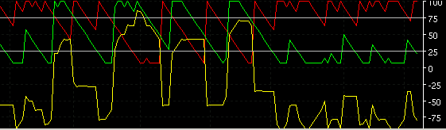

AROON - AROON

Parameters:
Period - The period used.
Down Color - The DOWN plot color
Down Line Type - The DOWN type of plot to draw
Down Label - The text that identifies the plot
UP Color - The UP plot color
UP Line Type - The UP type of plot to draw
UP Label - The text that identifies the plot
OSC Color - The OSC plot color
OSC Line Type - The OSC type of plot to draw
OSC Label - The text that identifies the plot
Buy Zone Color - The buy zone line color
Sell Zone Color - The sell zone line color
Buy Zone - The buy zone value
Sell Zone - The sell zone value
Description:
Formula Reference:
Syntax
AROON(ARRAY OUTPUT, Period)
Function
ARRAY OUTPUT is which of the 3 plots requested. DOWN, UP or OSC.
Example
AROON(UP, 14)